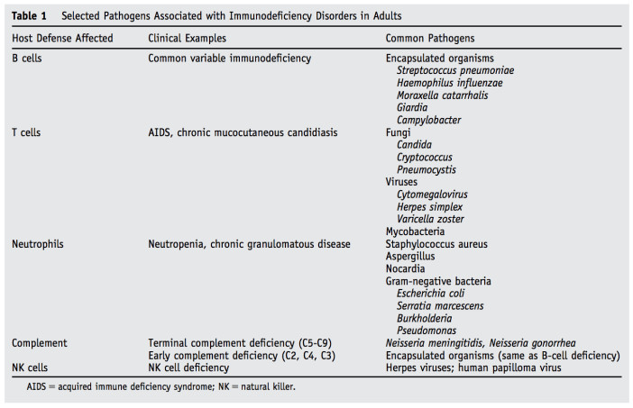

Recommendations for the Treatment of Methicillin-Resistant Staphylococcus aureus (MRSA)
Source [@Liu2011ClinicalPractice]
Source [@Liu2011ClinicalPractice]
| 狀況 | 診斷考量 | 經驗治療 | 根據培養結果調整最終療法並確定治療時長，包括出院處方 |
|---|---|---|---|
| 社區性肺炎 | 治療開始後複查病例以確認肺炎診斷或排除非感染性病因。 | 除非有臨床指徵，避免經驗性使用抗綠膿桿菌β-lactam類藥物和/或抗MRSA藥物。 | 大多數無併發症的成年肺炎病例可在患者迅速臨床反應的情況下進行5天治療。數據也顯示，MRSA鼻腔移生檢測結果為陰性可幫助指導停用MRSA肺炎的經驗性治療 |
| 泌尿道感染 | 實施尿液培養開立標準，以確保陽性培養更可能代表感染而非膀胱移生。例如： 僅在患者出現符合UTI的徵兆和症狀時訂開立培養，如尿急、頻尿、排尿困難、耻骨上疼痛、側腹疼痛、骨盆不適或急性血尿。 對於使用導尿管的患者，若無UTI的徵兆和症狀，避免僅因尿液外觀混濁或氣味難聞而進行尿液培養。 譫妄、噁心和嘔吐等非特異性徵兆和症狀應謹慎解讀，因為單獨這些徵兆對UTI的特異性較低。 |
建立標準以區分無症狀和有症狀的菌尿症。除非在某些臨床情況下需要治療（如妊娠婦女和進行侵入性泌尿生殖手術的患者），否則應避免對無症狀菌尿症進行抗生素治療。 | 使用臨床適宜的最短抗生素治療時長。 |
| 皮膚和軟組織感染 | 制定診斷標準以區分化膿性和非化膿性感染，以及疾病的嚴重程度（即輕度、中度和重度），以便根據指南適當管理皮膚和軟組織感染。 | 除非有臨床指徵，避免經驗性使用抗綠膿桿菌β-lactam類藥物和/或抗厭氧菌藥物。對於無併發症的非化膿性蜂窩織炎，可能不需要使用特別針對MRSA的治療。 | 大多數無併發症的細菌性蜂窩織炎病例可在患者迅速臨床反應的情況下進行5天治療。 |
Source: [@Donnell2020RevisionUpdate]
- Proven IFD can apply to any patient, regardless of whether the patient is immunocompromised
- Probable invasive fungal diseases (IFD) requires the presence of at least 1 host factor, a clinical feature and mycologic evidence and is proposed for immunocompromised patients only
- Cases that meet the criteria for a host factor and a clinical feature but for which mycological evidence has not been found are considered possible IFD
- (1,3)-beta-D glucan was not considered to provide mycological evidence of any invasive mold disease
Source: [@Donnell2020RevisionUpdate]
- Proven IFD can apply to any patient, regardless of whether the patient is immunocompromised
- Probable invasive fungal diseases (IFD) requires the presence of at least 1 host factor, a clinical feature and mycologic evidence and is proposed for immunocompromised patients only
- Cases that meet the criteria for a host factor and a clinical feature but for which mycological evidence has not been found are considered possible IFD
- (1,3)-beta-D glucan was not considered to provide mycological evidence of any invasive mold disease
source: Pocket Medicine, 2022
| Predisposition | Classic Infectious Etiologies |
|---|---|
| Humoral immune dysfunction (eg, CVID, myeloma) and asplenia | Encapsulated bacteria: **S. pneumo, H. flu, N. meningitidis (vaccinate against these 3, ideally prior to splenectomy) Other bacteria:E. coli and other GNRs, Capnocytophaga Parasites:** _Babesia, Giardia; _*Viruses: *VZV, echovirus, enterovirus |
| Granulocytopenia or neutropenia (includes DM, ESRD → functional impairment) | Bacteria: Gram positive: coag ⊖ staph, S. aureus, viridans strep, S. pneumo, other strep; Corynebacterium spp., Bacillus spp. Gram negative: E. coli, Klebsiella, Pseudomonas Fungi: Yeast: Candida albicans and other Candida spp. Molds: Aspergillus, Mucor spp., endemic fungi and others Viruses: VZV, HSV1 and 2, CMV |
| Impaired cell-mediated immunity (CMI) (eg, HIV/AIDS, chronic steroids, posttransplant, DM, ESRD, autoimmune dis.) | Bacteria: Salmonella spp., Campylobacter, Listeria, Yersinia, Legionella(Lancet 2016;387:376), Rhodococcus, Nocardia, TB, non-TB mycobacteria Fungi: Candida, Crypto, Histo, Coccidio, Aspergillus, Pneumocystis, Zygomycetes spp. and other molds Viruses: HSV, VZV, CMV, EBV, JC virus, BK virus Parasites: Toxoplasma, Cryptosporidium, Isospora, Microsporidia Babesia; Strongyloides |
| Organ dysfunction | Liver (esp. cirrhosis): Vibrio spp., encapsulated bacteria ESRD: impaired granulocyte fxn and CMI as above Iron overload (or deferoxamine Rx): Yersinia, Zygomycetes |
| Biologics (eg, TNF inhibitors, anti-B-cell Rx; ✓ for TB before starting) | Bacteria: sepsis, septic arthritis, TB, NTM, Listeria, Legionella Fungi: Pneumocystis, Histo, Coccidio, Aspergillus, endemic fungi Viruses: JC virus (PML), EBV, HSV, VZV, HBV Parasites: Strongyloides reactivation |


source: Pocket Medicine, 2022, 台灣肺結核診治指引第七版
source:: Pocket Medicine, 2022
source: Pocket Medicine, 2022; 台灣診治指引
source: Pocket Medicine, 2022
source: Pocket Medicine, 2022
source: Pocket Medicine, 2022
| RIsk factors | Point |
|---|---|
| male sex | +1 |
| hypertension | +1 |
| coronary arterial disease | +1 |
| serogroup C1 | +1 |
| immunosuppressive therapy | -1 |
| malignancy | -1 |
≥ +1 → arrange CT
Se: 95.0%
Sp: 45.3%
AUC: 0.83 (0.78-0.89)
source: Pocket Medicine, 2022; 台灣肺結核診治指引
限下列條件之一使用：
確定或高度懷疑為MRSA 肺炎（痰液培養出MRSA，伴隨全身發炎反應，且CXR 出現新的浸潤或痰液性狀改變或氧氣需求增加），並符合下列危險因子之一：（105/2/1、108/4/1）
因嚴重肺炎致呼吸衰竭或合併嚴重敗血症之患者，同時有其他部位懷疑或證實為MRSA 感染，得以經驗性使用；惟後續呼吸道微生物學檢查結果無MRSA呼吸道感染證據時，應停止使用。（108/4/1）
證實為MRSA 複雜性皮膚和皮膚構造感染，並符合下列條件之一：（108/4/1）
證實為VRE（vancomycin-resistant enterococci)感染，且其VRE 菌株對ampicillin 為抗藥者。（108/4/1）
其他抗藥性革蘭氏陽性球菌感染，因病情需要，經感染症專科醫師會診確認需要使用者。
心內膜炎（endocarditis）病患不建議使用。（108/4/1）
Lamivudine 100mg, entecavir, telbivudine, tenofovir disoproxil, tenofovir alafenamide用於慢性病毒性 B 型肝炎患者之條件如下：